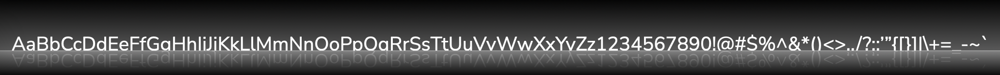

Nunito Sans is a sansserif font family created by Jacques Le Bailly in 2017, based on the Nunito family of fonts created by Vernon Adams in 2011.
Adams created the Nunito font family to serve as a rounded terminal sans serif, for use in professional display typography.
Vernon Adams passed away on August 24th, 2016. Jacques Le Bailey picked up the Nunito font family afterward and extended the font family to inclide a full set of weights, as well as developing a non-rounded terminal version, Nunito Sans. This font was then upgraded again in 2023 to give it its four axes: variable lowercase height, optical size, width and weight.
Nunito Sans has four variable font axes.
